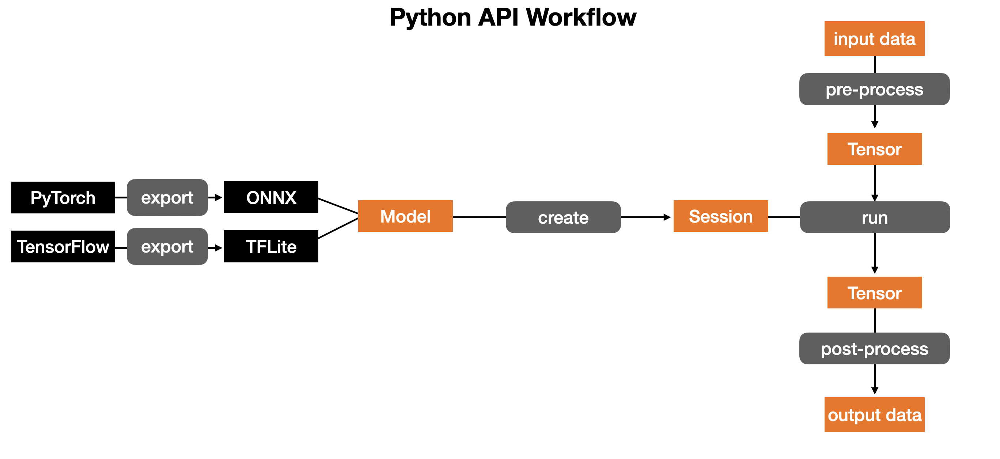
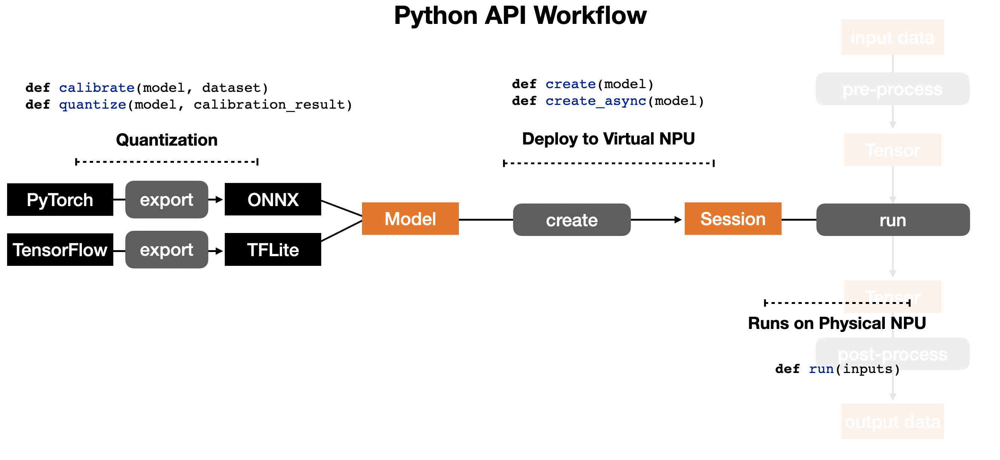

Introduction
FuriosaAI NPU (Neural Processing Unit) has APIs available in C/C++ and Python for executing a DNN model.
Prerequisites
- Linux (Ubuntu 18.04 LTS or later)
Installing FuriosaAI SDK
FPGA Installation
Jupyter Notebook Examples
FuriosaAI Jupyter Notebook Examples
FuriosaAI CLI
Getting Started
 Renegade Python API workflow is like the above.
 Running models on Renegade NPU consists of three steps:
- Covert models on TensorFlow or PyTorch into TFLite and ONNX models with quantization
- Compile a TFLite or ONNX model and deploy the compiled model to virtual NPU
- Run the compiled model on physical NPU
Python API
C/C++ API
create_nux()
Create a Nux handle
#include "nux.h"
nux_handle_t nux;
nux_error_t err = create_nux(&nux);
This API creates a nux handle for subsequent activities.
Parameters
| Parameter | Description |
|---|---|
| nux | Mutable pointer to receive a created Nux handle |
Return
nux_error_t_success if successful, or
it will return nux_error_t_nux_creation_failed.
destroy_nux()
Destroy a Nux handle
#include "nux.h"
destroy_nux(nux);
This API destroys a nux handle.
Parameters
| Parameter | Description |
|---|---|
| nux | Nux handle to be destroyed. It must not be NULL. |
nux_create_sync_model()
Create a synchronous model
#include "nux.h"
nux_sync_model_t sync_model;
nux_error_t err = nux_create_sync_model(nux,
(unsigned char*)buffer,
model_size,
&sync_model);
This creates a synchronous model handle.
Parameters
| Parameter | Description |
|---|---|
| nux | Mutable pointer to specify Nux handle |
| buffer | Byte buffer containing ENF binary (i.e., model to be used in an inference task) |
| model_size | Byte length of buffer |
| sync_model | Mutable pointer to receive the handle of a created synchronous model |
The corresponding Python API does not require the above parameters. Instead,
it directly takes an enf file path.
Return
nux_error_t_success if successful, or
it will return nux_error_t_nux_creation_failed.
destroy_sync_model()
Destroy a synchronous model
#include "nux.h"
destroy_sync_model(sync_model);
This destroys a synchronous model handle, which is not going to be used any more.
Parameters
| Parameter | Description |
|---|---|
| sync_model | Synchronous model to be destroyed, and it must not be NULL. |
model_count_inputs()
Get the number of input tensors
#include "nux.h"
nux_sync_model_t sync_model;
...
int nInputs = model_count_inputs(sync_model);
Return the number of input tensors of a given sync model.
Parameters
| Parameter | Description |
|---|---|
| sync_model | Synchronous model handle. |
Return
The number of input tensors for the given model.
model_count_outputs()
Get the number of output tensors
#include "nux.h"
nux_sync_model_t sync_model;
...
int nOutputs = model_count_outputs(sync_model);
Return the number of output tensors of a given sync model.
Parameters
| Parameter | Description |
|---|---|
| sync_model | Synchronous model handle. |
Return
The number of output tensors for the given model.
model_input_tensor()
Get an input tensor handle for a synchronous model
#include "nux.h"
nux_sync_model_t sync_model;
nux_tensor_t tensor;
int index;
...
nux_error_t err = model_input_tensor(sync_model, index, &tensor);
Get the handle of a specified input tensor from a given sync model.
Parameters
| Parameter | Description |
|---|---|
| sync_model | Synchronous model handle. |
| index | Input tensor index. |
| tensor[out] | Mutable pointer to receive the handle of a specified input tensor. |
Return
nux_error_t_success if successful, or
it will return nux_error_t_nux_creation_failed.
model_output_tensor()
Get an output tensor handle for a synchronous model
#include "nux.h"
nux_sync_model_t sync_model;
nux_tensor_t tensor;
int index;
...
nux_error_t err = model_output_tensor(sync_model, index, &tensor);
Get the handle of a specified output tensor from a given sync model.
Parameters
| Parameter | Description |
|---|---|
| sync_model | Synchronous model handle. |
| index | Output tensor index. |
| tensor[out] | Mutable pointer to receive the handle of a specified output tensor. |
Return
nux_error_t_success if successful, or
it will return nux_error_t_nux_creation_failed.
model_run()
Execute a synchronous model
#include "nux.h"
nux_sync_model_t sync_model;
...
nux_error_t err = model_run(sync_model);
Run a single inference task
Before calling this function, you must fill input tensors with proper data.
Please refer to model_input_tensor and tensor_set_buffer
to learn how to fill input tensors with data.
Parameters
| Parameter | Description |
|---|---|
| sync_model | Synchronous model handle. |
Return
nux_error_t_success if successful, or
it will return nux_error_t_nux_creation_failed.
tensor_set_buffer()
Copy data to an input tensor
#include "nux.h"
nux_tensor_t inputTensor;
void* buffer;
int buf_size;
...
nux_error_t err = tensor_set_buffer(inputTensor, buffer, buf_size);
Copy data into the data buffer of a specified input tensor.
To execute model_run, you first need to fill input tensors with data.
This function copies the data into the data buffer of a specified input tensor.
Parameters
| Parameter | Description |
|---|---|
| inputTensor | Tensor handle into which you want to copy input data. |
| buffer | Pointer to the data buffer. |
| buf_size | Byte length of buffer |
Return
nux_error_t_success if successful,
or nux_error_t_invalid_buffer if buffer is invalid.
tensor_get_buffer()
Copy data from an output tensor
#include "nux.h"
nux_tensor_t outputTensor;
...
nux_buffer_t buffer;
nux_buffer_len_t buf_size;
nux_error_t err = tensor_get_buffer(outputTensor, &buffer, &buf_size);
Get a pointer to the data buffer of a given tensor.
Once model_run is called, the inference result will be written into output tensors.
This function returns a pointer to the data buffer of a specified output tensor.
Parameters
| Parameter | Description |
|---|---|
| outputTensor | Tensor from which you want to get a pointer of the data buffer |
| buffer | Mutable pointer to receive the pointer to the data buffer |
| buf_size[out] | Byte length of buffer |
Return
nux_error_t_success if successful.
nux_create_task_model()
Create a task model
#include "nux.h"
void *buffer;
int max_batch;
int model_size;
nux_handle_t nux;
nux_task_model_t task_model;
nux_error_t err = nux_create_task_model(nux,
(unsigned char*)buffer,
model_size,
max_batch,
output_callback,
error_callback,
finish_callback,
&task_model);
The signatures of the above callback functions should be:
void output_cb(nux_request_id_t id,
nux_output_index_t out_id,
nux_buffer_t buf,
nux_buffer_len_t buf_len) {
// fill your logic
}
void my_error_cb(nux_request_id_t id, nux_error_t err) {
// fill your logic
}
void my_finish_cb(nux_request_id_t id) {
// fill your logic
}
Create an instance of a task model.
This function allows users to run multiple inference tasks asynchronously and simultaneously.
When each task is completed or failed, corresponding callback functions will be called
with nux_request_id_t, an identifier of a task request.
See also task_execute() for more details.
Parameters
| Parameter | Description |
|---|---|
| nux | Nux handle. |
| buffer | Byte buffer containing ENF binary. |
| model_size | Byte length of buffer |
| max_batch | Number of concurrent running tasks. This can be limited according to internal configurations and HW capacity. |
| output_callback | Callback function invoked when a task is completed. It will be called per output tensor. |
| error_callback | Callback function invoked when a task is failed. |
| finish_callback | Callback function which will be called finally after the output_callback is called after all output tensors. |
| task_model | Mutable pointer to receive the handle of a created task model. |
Return
nux_error_t_success if successful, or
it will return nux_error_t_nux_creation_failed.
task_model_get_task()
Get a task from a task model
#include "nux.h"
nux_task_model_t task_model;
...
nux_task_t task;
nux_error_t err = task_model_get_task(task_model, &task);
Retrieve a task handle from a specified task model.
When there is no available task in a given task model, it will block until new task is available.
Parameters
| Parameter | Description |
|---|---|
| task_model | Handle of a task model. |
| task | Mutable pointer to receive the handle of a created task. |
Return
nux_error_t_success if successful, or
it will return nux_error_t_model_execution_failed.
task_model_try_get_task()
Get a task from a task model (Non-blocking)
#include "nux.h"
nux_task_model_t task_model;
...
nux_task_t task;
nux_error_t err = task_model_try_get_task(task_model, &task);
Get a task handle from the specified task model without blocking operations.
It's the non-blocking version of task_model_get_task.
Parameters
| Parameter | Description |
|---|---|
| task_model | Handle of a task model. |
| task | Mutable pointer to receive the handle of a created task. |
Return
This function returns an available task, or
it will return immediately nux_error_t_get_task_failed if there's no available task in a given task model.
task_input()
Get a task input tensor handle
#include "nux.h"
nux_task_t task;
...
nux_buffer_t buffer = task_input(task, index);
Return a mutable pointer to the buffer of the specified input tensor.
Parameters
| Parameter | Description |
|---|---|
| task | Task handle |
| index | Index of the input tensor. |
Return
A mutable pointer to the data buffer of the given input tensor.
task_input_size()
Get the size of an input tensor
#include "nux.h"
nux_task_t task;
...
nux_buffer_len_t length = task_input_size(task, 0);
Return the buffer length in bytes of the specified input tensor.
Parameters
| Parameter | Description |
|---|---|
| task | Task handle |
| index | Index of the input tensor. |
Return
The size of the specified input tensor.
task_execute()
Run a task model
#include "nux.h"
nux_task_t task;
nux_request_id_t request_id;
...
nux_error_t err = task_execute(task, request_id);
Request one asynchronous inference task.
This function submits a request for an inference task identified by task.
Once a task is completed, output_callback function passed to nux_create_task_model
will be called with a distinct output index per output tensor.
finish_callback function will be also called
after output_callback function is called for all output tensors.
Parameters
| Parameter | Description |
|---|---|
| task | Task handle obtained from calling task_model_get_task or task_model_try_get_task. |
| request_id | request_id An positive integer to distinguish task requests. The behavior of task_execute doesn't rely on a request_id value at all. request_id will be just passed to callback functions. |
Return
nux_error_t_success if successful, or
it will return nux_error_t_model_execution_failed.
destroy_task_model()
Destroy a task model
#include "nux.h"
destroy_task_model(task_model);
Destroy the task model and release its resources.
| Parameter | Description |
|---|---|
| task_model | Task model to be destroyed. |
task_model_is_all_task_done()
Check whether all tasks are done
#include "nux.h"
nux_task_model_t task_model;
...
bool ck = task_model_is_all_task_done(task_model);
| Parameter | Description |
|---|---|
| task_model | Task model handle. |
je
Return
true if there's no running tasks, or false if any task is still running.
Supported Operators
- Add
- AveragePool2d
- Broadcast
- Clip
- Concatenation
- Conv2d
- DepthToSpace
- DepthwiseConv2d
- Exp
- Expand
- Flatten
- FullyConnected
- Gemm
- LpNorm
- Mask
- MatMul
- MaxPool2d
- Mean
- Mul
- Pad
- Pad
- ReduceL2
- ReduceSum
- Relu
- Requantize
- Reshape
- Resize
- Sigmoid
- Slice
- Softmax
- Softplus
- Split
- TableLookup
- Transpose
- TransposeConv
- Unsqueeze